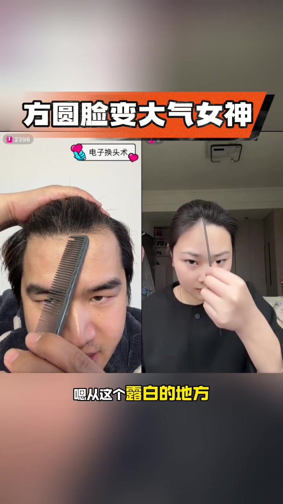
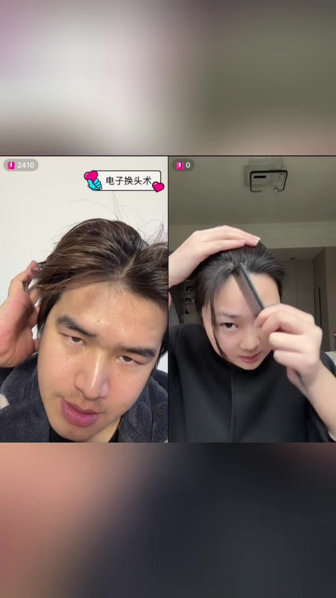
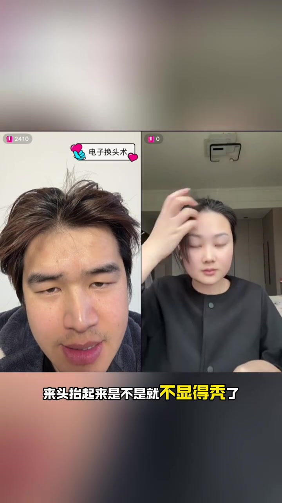
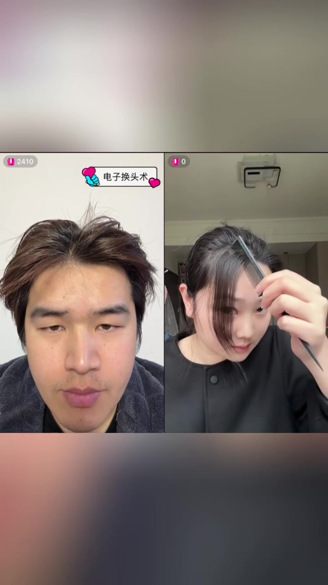
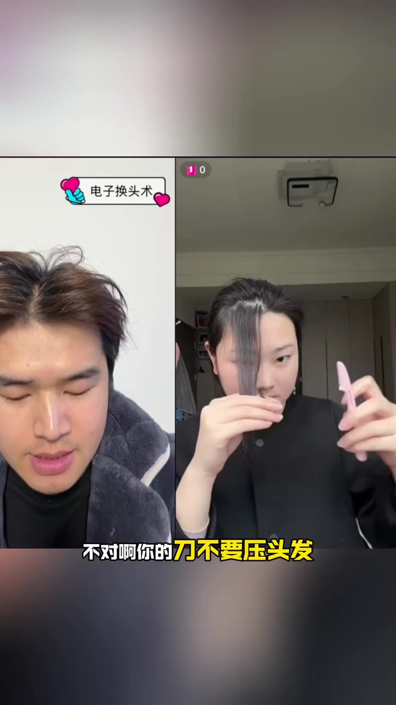
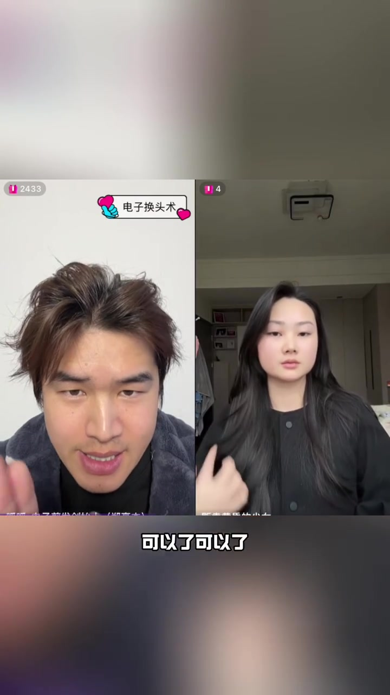
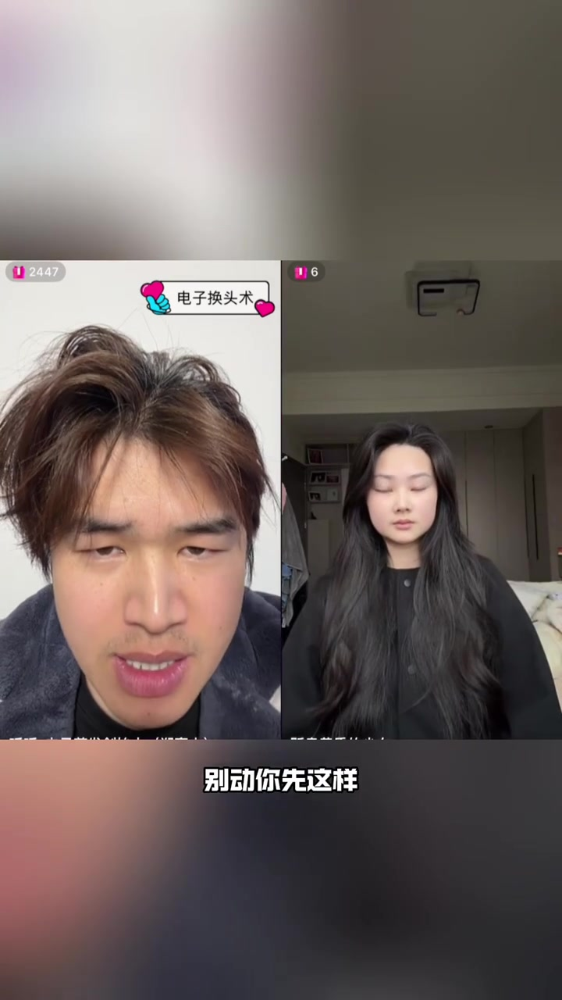
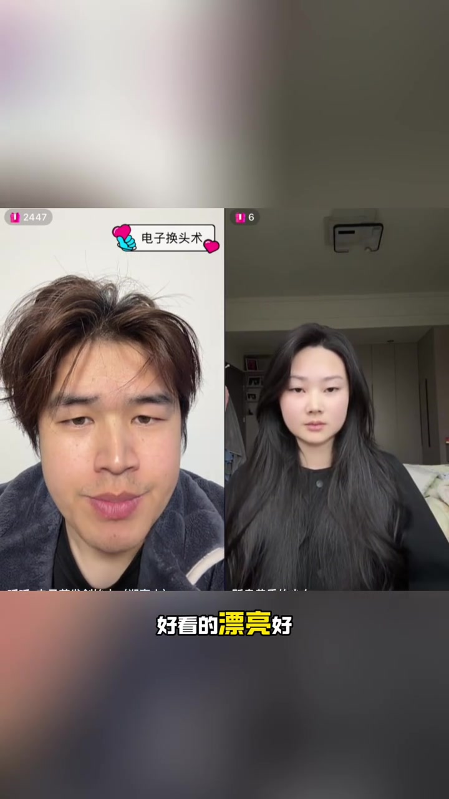

开场：方圆脸变大气女神，先找露白
画面顶部大字写着「方圆脸变大气女神」。左侧是自称「电子换头术」的造型师，右侧女生跟做；笔记文案则把主题压成「大脸女生 八字刘海」。
造型师先让对方找到发缝/刘海根部露出来的「露白」位置，再指挥「往这边扣，扣一点出来」。整条视频就是一场实时连麦剪发课，而不是预先剪辑好的成品展示。
可见字幕与标题里的「露白」「扣」「刮」等词，Whisper 常误听成「抠」「挂」「不想吐」。下文叙述按画面字幕与操作语境校正，文末转录区仍保留原始分段。

第一步：把刘海扣下来，盖住露白
造型师反复纠正「不是露白的地方」「这里扣下来」，直到刘海刚好盖住那块发白的头皮。字幕出现「它就盖那个白的地方了嘛」「是不是就没有了」——目标很具体：露白消失。
盖住之后，他让女生把头抬起来看效果。画面字幕写「来头抬起来是不是就不显得秃了」；Whisper 把「不显得秃」听成「不想吐」。对比点是抬头后发际线是否仍显空。


延长线继续扣：让额角「消失」
下一步不是再剪长度，而是沿着露白的延长线继续扣发：「把这个露白的延长线扣下来」「再往上一点」。造型师一边说「够了够了」，一边让对方把发往前梳，准备进入削薄/刮薄。
约 01:07 左右，他直接点题：「你也没发现这一块肚肚肉就消失了」「额角消失了，对不对」。这里的「肚肚肉」更像口语夸张，结合画面指的是额角两侧鼓出的视觉负担被刘海盖住。

刀削刘海：刀刃立起来，不要压头发
进入削发段落时，造型师不断喊「来点刮刮，慢点慢点」。关键纠错出现在字幕里：「不对啊你的刀不要压头发」「让你的刀刃立起来」「往前划不要压头发」。也就是说，刀是立着轻刮，而不是平压切断。
中间穿插一句玩笑：「哎呀我那里有个那个……还有个奥特曼」——女生发上有个小装饰/夹子被吐槽，随即继续用水把一束头发吹下来。之后他又指挥分三角往前梳、一耳朵翻出来，并说「正常常理要去底发间烫这种感觉」——暗示八字刘海的卷度常靠烫或热塑固定，现场是在模拟那种打底弧度。

双手推扳：把背后的发扔回来做层次
削完一段后，造型师进入造型指挥：「把这些扔背后」「手状往后推，往前扳了一下」「微微的低个头……好抬起来」。他要求先听指挥，把脖子后面的发扳过来，再微调脸侧发量。
约 04:30 起，他一边让对方扎起头发对比，一边做账号式口播：称自己是 2020 年起的一人化妆造型师，强调长短发、男女发都可以剪，并穿插「免费上面」「增送剪发」一类连麦促销话术。操作本身仍落在「剪掉开上的」「全部散开」「两只手掌往后推、往前扳」。

做出 C 弯：盖住凸出的额角
收尾的核心是「C」——画面与口令里反复出现「让那个 C 往前推」「盖住这个额角」「这个高的地方来往下揪盖额角」。造型师纠正左右手用法：要用左手去拉右边，把凸起的额角盖住，同时保持 C 弯形态不变。
他还会让对方把位置高度往下揪一点点，「不要太高」，再挑出 C 弯。整段是细节微调，而不是重新剪一轮。

收尾：第一种打底方法
造型师明确说：「好这是第一种打底方法」。随后又让女生把一侧头发交到后面，重复「往后推、往前扳」，再把 C 往前推一点盖住额角。视频在「对」的确认声中结束。
整条片子的现场目标很清楚：用八字刘海盖露白、消额角、做出可重复的打底弧度；它回答的是「此刻怎么跟做」，而不是给出可量产的剪发参数表。促销口播与玩笑话属于连麦语境，不应当成工艺标准。
